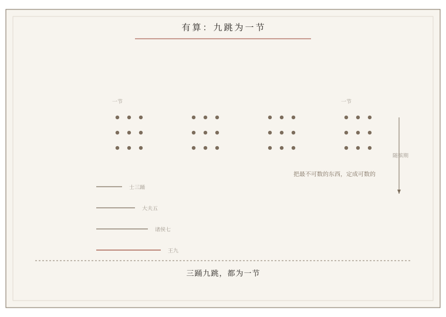

檀弓下 · 四·二十 · 第 345 课
辟踊，哀之至也。有算，为之节文也。
说什么事：捶胸跳足，是哀到极处的形。而它有定数，是替它立节度仪文。
落在哪一层：以「数」量哀。论「最猛的地方，为何偏偏用数字管住」。
为何编在此位：上节论素器，此节论辟踊。一静一动，皆哀之形；一动尤见节之必要。
【经】辟踊，哀之至也。有筭，為之節文也。
【注】算，数也。
【疏】抚心为辟，跳跃为踊。孝子丧亲，哀慕至懑，男踊女辟，是哀痛之至极也。／若不裁限，恐伤其性，故辟踊有算，为准节文章。准节之数，其事不一。每一踊三跳，三踊九跳，都为一节。／士舍死日三日而殡，凡有三踊：初死日袭，袭而踊；明日小敛，小敛而踊；又明日大敛，大敛又踊。凡三日为三踊也。／大夫五踊，舍死日四日而殡。诸侯七踊，舍死日六日而殡。／《周礼》王九踊，舍死日八日而殡。／故《杂记》云：「公七踊，大夫五踊，士三踊。」郑注云「士小敛之朝不踊，君大夫大敛之朝乃不踊」是也。
辟 抚心。「辟」读如擘，拍胸。
踊 跳跃。注疏皆以「抚心为辟，跳跃为踊」。
有算 有定数。
节文 节度与仪文。「节」为限，「文」为序。
懑 闷、郁结于中。
男踊女辟 男以踊，女以辟，各从其重。
舍死日 不算死的那一天。
捶胸跳足，是哀痛到了极处的表现。但它有定数，是为它立节度、定仪文。
此章只讲一件事：把最不可数的东西，定成可数的。
哀之极处，本是一片乱。礼偏偏在这里安上数目：一踊三跳，三踊九跳为一节；士三踊，大夫五，诸侯七，王九。
一章六字，背后是一部算学。
第一层 哀有两形：辟与踊 抚心为辟，跳跃为踊。一内敛，一外发。
男踊女辟，不是性别之仪，是哀之重者向外，轻者向内。古人不把哀只做成一种样子，而是给它两种形。
形既两种，则同类之中仍有分寸：不是所有人都该跳，也不是所有人都该捶。
第二层 「算」的技术：一踊三跳 疏给了具体的算：「每一踊三跳，三踊九跳，都为一节。」
此数看似琐细，实则是把「一阵一阵的悲」切成「一节一节的动作」。悲来如潮，礼以九跳为潮的一次。
切成节，人便能在一节之后停下来喘气。此即「恐其伤性」的实际办法。
第三层 等之差：三、五、七、九 士三踊、大夫五、诸侯七、王九，其数随殡期长短而增。
殡三日者三踊，四日者五踊，六日者七，八日者九。踊之数不取决于哀之深浅，而取决于「殡了多少天」。
此一层极重要：礼所量者，不是心之浓淡，是事之久暂。人不能连哭八日而不歇，故以日数配踊数，使其有起伏。
第四层 疏的辨：朝不踊 《杂记》「公七踊，大夫五踊，士三踊」，郑注：士小敛之朝不踊，君大夫大敛之朝乃不踊。
此辨指出：数不是均分的，其中有一处「空」。最忙的那天早上，反而不踊。
礼之精，正在这些「空处」：不是把所有时刻填满，是留一日不踊，使哀有喘息。
第五层 今日之用：给剧烈的情绪定次数 今人论情绪，多主张「尽情发泄」。此节所记，恰相反：越剧烈，越要有数。
数不是压制，是让人能持续。一次哭个够，往往哭坏；九跳一节，节节相续，反能哭得长久。
礼在此不是敌人，是那个替你把最痛的事分成可承受的段落的人。
与今日何干 今有丧仪简化，多不复辟踊，代之以鞠躬、默哀。形式虽易，其理不废：任何剧烈的哀，都需要有「节」，有起有止，人才走得下去。
| 左 | 右 |
|---|---|
| 辟 | 抚心 |
| 踊 | 跳跃 |
| 有算 | 有定数 |
| 节文 | 节度与仪文 |
| 一踊三跳 | 算之单位 |
| 三踊九跳 | 一节之数 |
| 士三·大夫五 | 随殡期而增 |
| 诸侯七·王九 | 其上 |
| 朝不踊 | 算中之空 |
画三列竖排的小点，视点正视。每列三点，三列为一组，组与组之间留一道稍宽的空白，示「九跳为一节」。全图共画四组，组的左侧画四道短横，长短依次递加，示三、五、七、九之差。不画人。赭色只用在最长那道短横。
